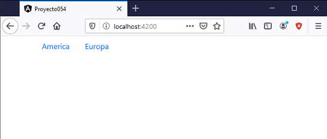
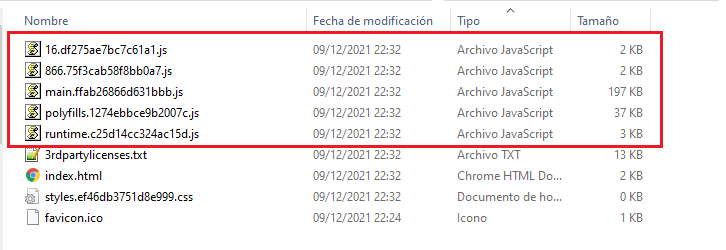

Este concepto está intimamente relacionada con rutas y módulos. El concepto de Lazy Loading nos permite organizar una aplicación Angular que no cargue en forma completa toda la aplicación web en una única llamada al servidor, sino que retrace la carga hasta el momento de su utilización.
Esta forma de particionar una aplicación y su carga por partes es de suma importancia cuando tenemos aplicaciones muy grandes y tiene como beneficio que el usuario no tenga que esperar mucho tiempo en la carga inicial de la aplicación. Como desventaja podríamos decir que cuando el usuario accede a otras secciones de la aplicación también tenga que esperar que se recuperen del servidor.
Para implementar Lazy Loading requerimos crear distintos módulos y en las rutas que definamos en dicho módulo especificar la sintaxis de carga perezosa.
Resolveremos el mismo problema del concepto anterior pero implementaremos el mismo con Lazy Loading.
Confeccionar una aplicación que muestre una barra de navegación (emplear Bootstrap) con 2 rutas: 'America' y 'Europa'.
Cuando se selecciona 'America', mostrar el mapa de 'América' y una barra de navegación con 3 paises americanos, hacer lo mismo si se elije Europa.
La componente principal de la aplicación debe ser la única a cargarse cuando hacemos la petición del servidor. Si el usuario elije 'América' en dicho momento se debe hacer la petición del módulo al servidor que define las componentes 'AmericaComponent', 'ArgentinaComponent', 'ChileComponent' y 'UruguayComponent'. Lo mismo debe suceder si elije 'Europa'.
Crearemos primero el proyecto y debemos tener cuidado de indicar que utilizaremos rutas en la aplicación Angular:
ng new proyecto054 --routing
Crearemos 2 módulos que alojaran las clases que posteriormente implementaremos de cada pais e indicamos que cada módulo administrará sus rutas:
ng generate module america --routing ng generate module europa --routing
Con la sintaxis anterior se crea la carpeta 'america' y dentro de ella dos archivos el archivo 'america.module.ts':
import { NgModule } from '@angular/core';
import { CommonModule } from '@angular/common';
@NgModule({
declarations: [],
imports: [
CommonModule
]
})
export class AmericaModule { }
Y el archivo 'america-routing.module.ts':
import { NgModule } from '@angular/core';
import { Routes, RouterModule } from '@angular/router';
const routes: Routes = [];
@NgModule({
imports: [RouterModule.forChild(routes)],
exports: [RouterModule]
})
export class AmericaRoutingModule { }
También se crea la carpeta 'europa' y dentro de ella 2 archivos, uno es el archivo 'europa.module.ts':
import { NgModule } from '@angular/core';
import { CommonModule } from '@angular/common';
@NgModule({
declarations: [],
imports: [
CommonModule
]
})
export class EuropaModule { }
Y el otro archivo es 'europa-routing.module.ts':
import { NgModule } from '@angular/core';
import { Routes, RouterModule } from '@angular/router';
const routes: Routes = [];
@NgModule({
imports: [RouterModule.forChild(routes)],
exports: [RouterModule]
})
export class EuropaRoutingModule { }
Procedemos a crear las 8 componentes y alojarlos en los módulos respectivos:
ng g c america -m app.module.ts ng g c america/chile -m america/america.module.ts ng g c america/argentina -m america/america.module.ts ng g c america/uruguay -m america/america.module.ts ng g c europa -m app.module.ts ng g c europa/espana -m europa/europa.module.ts ng g c europa/francia -m europa/europa.module.ts ng g c europa/italia -m europa/europa.module.ts
Gracias a Angular Cli hemos creado las 8 clases y hemos dispuesto 3 de ellas alojadas en el archivo 'america.module.ts':
import { NgModule } from '@angular/core';
import { CommonModule } from '@angular/common';
import { ChileComponent } from './chile/chile.component';
import { ArgentinaComponent } from './argentina/argentina.component';
import { UruguayComponent } from './uruguay/uruguay.component';
@NgModule({
declarations: [ChileComponent, ArgentinaComponent, UruguayComponent],
imports: [
CommonModule
]
})
export class AmericaModule { }
Otras 3 en el módulo 'europa.module.ts':
import { NgModule } from '@angular/core';
import { CommonModule } from '@angular/common';
import { EspanaComponent } from './espana/espana.component';
import { FranciaComponent } from './francia/francia.component';
import { ItaliaComponent } from './italia/italia.component';
@NgModule({
declarations: [EspanaComponent, FranciaComponent, ItaliaComponent],
imports: [
CommonModule
]
})
export class EuropaModule { }
Y finalmente otras 2 en el módulo principal de nuestra aplicación 'app.module.ts':
import { BrowserModule } from '@angular/platform-browser';
import { NgModule } from '@angular/core';
import { AppRoutingModule } from './app-routing.module';
import { AppComponent } from './app.component';
import { AmericaComponent } from './america/america.component';
import { EuropaComponent } from './europa/europa.component';
@NgModule({
declarations: [
AppComponent,
AmericaComponent,
EuropaComponent
],
imports: [
BrowserModule,
AppRoutingModule
],
providers: [],
bootstrap: [AppComponent]
})
export class AppModule { }
Ahora vamos a proceder a codificar las rutas del módulo principal de nuestra aplicación, para ello abrimos el archivo 'app-routing.module.ts' y especificamos la sintaxis para hacer la carga de los otros módulos con Lazy Loading:
import { NgModule } from '@angular/core';
import { Routes, RouterModule } from '@angular/router';
import { AmericaComponent } from './america/america.component';
import { EuropaComponent } from './europa/europa.component';
const routes: Routes = [
{
path: 'america',
component: AmericaComponent,
loadChildren: () => import('./america/america.module').then(m => m.AmericaModule)
},
{
path: 'europa',
component: EuropaComponent,
loadChildren: () => import('./europa/europa.module').then(m => m.EuropaModule)
}
]
@NgModule({
imports: [RouterModule.forRoot(routes)],
exports: [RouterModule]
})
export class AppRoutingModule { }
Podemos ver que la sintaxis de carga diferida usa la propiedad loadChildren seguida de la función 'import' para las importaciones dinámicas del módulo indicado en el parámetro. La ruta de importación es la ruta relativa al módulo:
loadChildren: () => import('./america/america.module').then(m => m.AmericaModule)
Agreguemos Bootstrap a nuestro archivo 'index.html':
<!doctype html>
<html lang="en">
<head>
<meta charset="utf-8">
<title>Proyecto054</title>
<base href="/">
<meta name="viewport" content="width=device-width, initial-scale=1">
<link rel="icon" type="image/x-icon" href="favicon.ico">
<link rel="stylesheet" href="https://stackpath.bootstrapcdn.com/bootstrap/4.4.1/css/bootstrap.min.css"
integrity="sha384-Vkoo8x4CGsO3+Hhxv8T/Q5PaXtkKtu6ug5TOeNV6gBiFeWPGFN9MuhOf23Q9Ifjh" crossorigin="anonymous">
<link rel="stylesheet" href="https://stackpath.bootstrapcdn.com/bootstrap/4.4.1/css/bootstrap.min.css"
integrity="sha384-Vkoo8x4CGsO3+Hhxv8T/Q5PaXtkKtu6ug5TOeNV6gBiFeWPGFN9MuhOf23Q9Ifjh" crossorigin="anonymous">
</head>
<body>
<app-root></app-root>
<script src="https://code.jquery.com/jquery-3.4.1.slim.min.js"
integrity="sha384-J6qa4849blE2+poT4WnyKhv5vZF5SrPo0iEjwBvKU7imGFAV0wwj1yYfoRSJoZ+n"
crossorigin="anonymous"></script>
<script src="https://cdn.jsdelivr.net/npm/popper.js@1.16.0/dist/umd/popper.min.js"
integrity="sha384-Q6E9RHvbIyZFJoft+2mJbHaEWldlvI9IOYy5n3zV9zzTtmI3UksdQRVvoxMfooAo"
crossorigin="anonymous"></script>
<script src="https://stackpath.bootstrapcdn.com/bootstrap/4.4.1/js/bootstrap.min.js"
integrity="sha384-wfSDF2E50Y2D1uUdj0O3uMBJnjuUD4Ih7YwaYd1iqfktj0Uod8GCExl3Og8ifwB6"
crossorigin="anonymous"></script>
</body>
</html>
Procedemos a modifar la componente principal que nos genera Angular 'app.component.html':
<div class="container">
<div class="row">
<ul class="nav justify-content-center">
<li class="nav-item">
<a class="nav-link" routerLink="america">America</a>
</li>
<li class="nav-item">
<a class="nav-link" routerLink="europa">Europa</a>
</li>
</ul>
</div>
<div class="row">
<router-outlet></router-outlet>
</div>
</div>
La directiva 'router-outlet' es indispensable para que se muestren alguna de las dos componentes 'AmericaComponent' o 'EuropaComponent' según que enlace se seleccione.
Cuando se selecciona la ruta 'america' se carga la componentes 'AmericaComponent', modificamos la vista de dicha componente 'AmericaComponent.html'
<iframe src="https://www.google.com/maps/embed?pb=!1m14!1m12!1m3!1d31536306.714862086!2d-54.01447990393665!3d-20.38062741924525!2m3!1f0!2f0!3f0!3m2!1i1024!2i768!4f13.1!5e0!3m2!1ses!2sar!4v1583676893900!5m2!1ses!2sar" width="600" height="450" frameborder="0" style="border:0;" allowfullscreen=""></iframe>
<ul class="nav justify-content-center">
<li class="nav-item">
<a class="nav-link" routerLink="chile">Chile</a>
</li>
<li class="nav-item">
<a class="nav-link" routerLink="argentina">Argentina</a>
</li>
<li class="nav-item">
<a class="nav-link" routerLink="uruguay">Uruguay</a>
</li>
</ul>
<router-outlet></router-outlet>
Exactamente lo mismo hacemos para crear la componente 'EuropaComponent.html':
<iframe src="https://www.google.com/maps/embed?pb=!1m14!1m12!1m3!1d9880418.608500127!2d2.640727530399596!3d45.69187171781666!2m3!1f0!2f0!3f0!3m2!1i1024!2i768!4f13.1!5e0!3m2!1ses!2sar!4v1583677509059!5m2!1ses!2sar" width="600" height="450" frameborder="0" style="border:0;" allowfullscreen=""></iframe>
<ul class="nav justify-content-center">
<li class="nav-item">
<a class="nav-link" routerLink="espana">España</a>
</li>
<li class="nav-item">
<a class="nav-link" routerLink="francia">Francia</a>
</li>
<li class="nav-item">
<a class="nav-link" routerLink="italia">Italia</a>
</li>
</ul>
<router-outlet></router-outlet>
Debemos ahora crear las rutas del archivo 'america-routing.module.ts':
import { NgModule } from '@angular/core';
import { Routes, RouterModule } from '@angular/router';
import { ChileComponent } from './chile/chile.component';
import { ArgentinaComponent } from './argentina/argentina.component';
import { UruguayComponent } from './uruguay/uruguay.component';
const routes: Routes = [
{
path: 'chile',
component: ChileComponent
},
{
path: 'argentina',
component: ArgentinaComponent
},
{
path: 'uruguay',
component: UruguayComponent
}
];
@NgModule({
imports: [RouterModule.forChild(routes)],
exports: [RouterModule]
})
export class AmericaRoutingModule { }
También debemos hacer lo mismo con las rutas del archivo 'europa-routing.module.ts':
import { NgModule } from '@angular/core';
import { Routes, RouterModule } from '@angular/router';
import { EspanaComponent } from './espana/espana.component';
import { FranciaComponent } from './francia/francia.component';
import { ItaliaComponent } from './italia/italia.component';
const routes: Routes = [
{
path: 'espana',
component: EspanaComponent
},
{
path: 'francia',
component: FranciaComponent
},
{
path: 'italia',
component: ItaliaComponent
}
];
@NgModule({
imports: [RouterModule.forChild(routes)],
exports: [RouterModule]
})
export class EuropaRoutingModule { }
Ya tenemos prácticamente finalizado el ejemplo de Lazy Loading con Angular, podemos modicar las vistas de las componentes de cada país con algunos datos de prueba:
chile.component.html argentina.component.html uruguay.component.html espana.component.html francia.component.html italia.component.html
Podemos probar esta aplicación en la web aquí.
Si ingresamos a la raiz del sitio tenemos que se carga la componente 'AppComponent' que se encuentra alojada en el módulo principal de la aplicación:
Para entender realmente lo que sucede con la carga de la aplicación en el navegador debemos compilar la aplicación y ver los archivos generados:
ng build
Vemos ahora que el proyecto tiene más archivos *.js, Angular se encargó de agrupar los algoritmos que requieren cada módulo, luego durante la ejecución de la aplicación según las peticiones del usuario se procede a la carga del módulo respectivo:
Es decir que hasta que no seleccione un continente no se carga el módulo respectivo y logramos que el módulo principal de la aplicación de Angular sea más pequeño.
La planificación de un proyecto grande en Angular requiere una buena división de módulos según sus funcionalidades y relaciones entre los mismos.